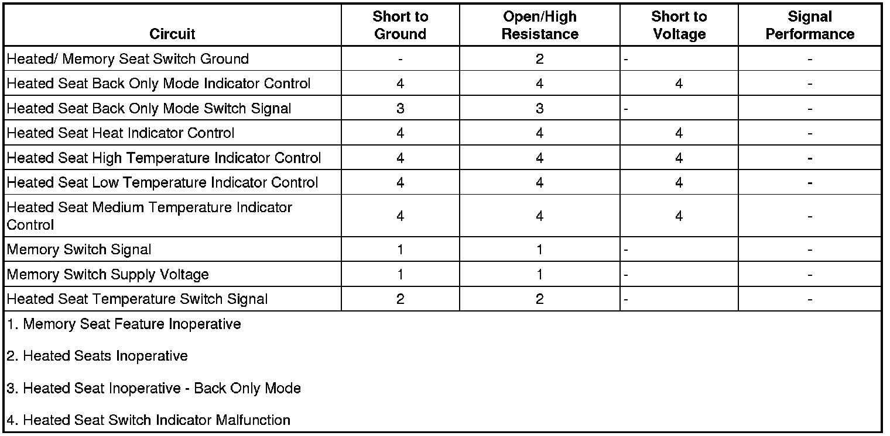

Memory Seat Feature Inoperative
Memory Seat Feature Inoperative
Diagnostic Instructions
* Perform the Diagnostic System Check - Vehicle (Initial Inspection and Diagnostic Overview) prior to using this diagnostic procedure.
* Review Strategy Based Diagnosis (Initial Inspection and Diagnostic Overview) for an overview of the diagnostic approach.
* Diagnostic Procedure Instructions (Initial Inspection and Diagnostic Overview) provides an overview of each diagnostic category.
Diagnostic Fault Information

Circuit/System Description
Battery positive voltage is supplied to the memory switch from the driver door module (DDM). When a memory switch is pressed, battery voltage is applied through the switch contacts, a series of resistors and thorough the memory switch signal circuit to the DDM. The door control module then sends a message via the GMLAN serial data line to the memory seat module (MSM) indicating the memory recall request. The MSM then commands the appropriate seat motors to move to the pre-recorded seat positions stored in memory in response to the switch input.
Diagnostic Aids
* The scan tool references the driver door module as the driver door switch.
* The scan tool may reference the memory seat module (MSM) as the driver position module.
Reference Information
Schematic Reference
Driver Seat Schematics (Driver Seat Schematics)
Connector End View Reference
Component Connector End Views (Connector Views)
Description and Operation
Memory Seats Description and Operation (Memory Seats Description and Operation)
Electrical Information Reference
* Circuit Testing (Component Tests and General Diagnostics)
* Connector Repairs (Component Tests and General Diagnostics)
* Testing for Intermittent Conditions and Poor Connections (Component Tests and General Diagnostics)
* Wiring Repairs (Component Tests and General Diagnostics)
Scan Tool Reference
Control Module References (Programming and Relearning)
Circuit/System Verification
1. Verify that all supervised power seat and lumbar functions operate as described in the description and operation. Refer to Memory Seats Description and Operation (Memory Seats Description and Operation) .
2. Verify that the memory recall personalization option is ON.
3. Verify that memory positions for driver 1 and driver 2 have been recorded to memory.
Circuit/System Testing
1. Ignition ON, with a scan tool verify the driver door switch memory recall switches parameter changes state while pressing the memory 1 switch.
• If the parameter does not change state, perform the Memory Switch component test. If the switch tests normal, replace the DDM.
2. Verify the scan tool memory recall switches parameter changes state while pressing the memory 2 switch.
• If the parameter does not change state, replace the memory switch.
3. Verify the scan tool memory recall switch parameter changes state while pressing the EXIT switch.
• If the parameter does not change state, replace the memory switch.
4. If all circuits test normal, replace the MSM.
Component Testing
Memory Switch
1. Ignition OFF, disconnect the X4 harness connector at DDM.
2. Test for infinite resistance between the memory switch signal circuit terminal 5 and the switch supply voltage circuit terminal 14 with the switch in the open position.
• If less than the specified value, replace the memory switch.
3. Test the resistance between the supply voltage terminal 14 and the signal terminal 5 while pressing the memory 1, memory 2, and EXIT buttons. Compare the resistance readings to the values in the Memory Switch Values table below.
• If the resistance values are not within the specified range, replace the memory switch.
Repair Instructions
Perform the Diagnostic Repair Verification (Verification Tests) after completing the diagnostic procedure.
* Driver Seat Adjuster Memory Switch Replacement (Removal and Replacement)
* Control Module References (Programming and Relearning) for DDM or MSM replacement, setup, and programming